衛星画像の撮像計画・撮像依頼から、届いた画像の判読と観測記録までを QGIS で行うプラグインの、毎日の作業の手引きです。設定ファイルの書き方やサーバー側の表の作り方は、管理者向けの説明（README）にあります。
| 知りたいこと | 見る所 |
|---|---|
| まず何をすればよいか | はじめに・最初にすること |
| 画面の見方・ドックの出し方 | 画面のつくり・どの担当でも使う操作 |
| よくある作業の流れを画面の写真で追う | 画面つきの手順書（画像の記録と分担の完了・撮像の依頼と確認・撮像計画の計算と採否） |
| 撮像計画・撮像依頼を作る | 撮像計画の担当 |
| 画像に写ったものを記録する | 観測記録の担当 |
| 画像を見やすくする・比べる・測る | 画像判読 |
| キーで速く操作したい | キーボードショートカット |
| うまく動かない | 困ったとき・サーバーにつながらないとき |
| 言葉の意味 | 用語 |
MIKAGE（ミカゲ。MIssion Kit for Applied GEospatial-intelligence の略）は、次の作業をひとつの QGIS でまとめて行うためのプラグインです。どの作業も、組織で共有している同じサーバー（ArcGIS）の表を読み書きするので、ほかの人の計画や記録もそのまま見えます。
| 担当 | おもな作業 |
|---|---|
| 撮像計画の担当 | どの衛星がいつ対象を撮れるかを調べ、撮像計画を保存する。定点・臨時の撮像依頼を登録し、毎日の撮像計画ファイルを出力する |
| 撮像を依頼する人 | 撮りたい場所・期間を撮像依頼として登録し、その依頼が計画に入ったか（採否）と、次にいつ撮るかを確かめる。計画の計算やファイルの書き出しはしない |
| 観測記録の担当 | 届いた画像を開いて、写っているモノ（船・航空機・車両・建物など）の位置・種別・活動を記録する。分担・通報・引き継ぎをする |
| 画像判読 | 画像を見やすく補正し、2 時期を比べ、影から高さを測るなどして、モノを見分ける |
| AI 学習の担当 | 教師データセットを作り、物体検出の AI を学習させる。AI結果を確かめて追加学習する |
| 判読練習の指導者 | 組織の画像で判読の練習の問題を作り（正解は経験者の観測記録から取り込める）、みんなの成績と取り違えやすい種別を見て、問題や解説を直す |
| 管理者 | サーバーの表につながるかの点検、監査ログの確認、設定ファイルの切り替えなど |
担当は自分の作業に合うものをいくつでもチェックできます。チェックした担当で使う機能だけがメニュー・ツールバー・ドックのボタンに出て、その作業に使うドック（画面の横に出る作業用のパネル）がそろいます。どれもチェックしなければ、管理者の機能のほかはすべて出ます。担当はいつでも変えられます。
プラグインを初めて入れたときだけ「最初の設定」の画面が出ます。あとで変えるときは、メニュー 担当と個人設定… から開きます。
「あとで」で閉じても、次から画面は出ません。
どのサーバーを使うか、どの画像カタログを探すかなどは、管理者が用意した設定ファイルで決まります。多くの場合はプラグインに同梱されていて、何もしなくても読み込まれます。
担当 管理者 をチェックした人は、メニュー 接続と表の点検… で、設定ファイルにあるサービスに 1 回ずつ問い合わせられます。書き込みはしないので、いつ押しても大丈夫です。ほかの担当の人は、一覧が出ないときに管理者へ知らせてください。
問題があれば 結果をコピー を押し、メールなどに貼って管理者に送ってください。
練習モードは、本番のサーバーから切り離して、練習用のデータで動く MIKAGE です。新しく来た人の練習や、使ったことのない機能を試すときに使います。練習中に記録・依頼・計画ファイルなどを作っても、本番のサーバーには何も書き込みません。練習用のサーバーはこの PC の中だけで動くので、閉じたネットワークでも、サーバーが止まっていても練習できます。
メニュー 練習モードを始める（メニュー「練習モード」の中）を押し、確認の画面で 開始。初めての「最初の設定」の画面の この設定で、まず練習 からも始められます。
こうなれば OK: 地図の上に橙色の帯「練習モード」が出て、ステータスバーの右端に「練習モード」、ドックの名前に「【練習】」、QGIS のウィンドウ名に「【練習モード】」が付きます。
練習モードの中で、画面つきの手順書と同じ操作を 1 つずつ案内します。メニュー チュートリアル…（メニュー「練習モード」の中）か、地図の上の帯の チュートリアル で、コースを選んで 開始。練習モードでないときは、先に練習モードを始めてからコースを選びます（始めるときの確認の画面の 始めたら、チュートリアル（操作を 1 つずつ案内するコース）を選ぶ も同じ。初めて練習モードを始めるときは入っています）。
| コース | 担当 | 手順 |
|---|---|---|
| はじめての MIKAGE | だれでも | 8（練習中の印・ボタンとドック・地図の動かし方・ヘルプ・練習の終え方） |
| 画像を探して記録し、担当を完了する | 観測記録の担当 | 19（手順書の 1-1〜9-3） |
| 撮像を依頼して、計画に入ったか確かめる | 撮像を依頼する人 | 16（手順書の 1・2・3・5・6・7） |
| たくさんの場所をまとめて依頼する（レイヤーから取り込み） | 撮像を依頼する人 | 4（手順書の 4-1〜4-4。練習用の場所のレイヤーを地図に入れて始める） |
| 撮像計画を計算して出し、採否を入れる | 撮像計画の担当 | 8（手順書の 1-1〜5-1。返ってくる採否のファイルは練習用に作る） |
練習モードの中で画像の判読の問題を解き、経験者が確かめた答えと照らし合わせます。メニュー 判読の練習…（メニュー「練習モード」の中）か、地図の上の帯の 判読の練習 で問題を選んで 開始。答えるのはいつもの観測記録ドックの操作（地図をクリックして記録・種別と活動・入力点数で測る・継続と消失）なので、本番と同じ手で練習できます。練習モードでないときは、先に練習モードを始めます。問題は、組織の判読の練習の指導者が作った問題（組織の実際の画像で。管理者が設定したとき）と、内蔵の見本の問題（横須賀の画像で 6 問）です。
| 問題の種類 | すること | 採点するもの |
|---|---|---|
| 見つける | 橙の点線の範囲の中の対象（船など）を、すべて記録する | 見つけたか・種別・活動。範囲の中で、答えにないものを記録すると「誤り」で減点 |
| 見分ける | 赤い番号の印のものを 1 つずつ記録する（探さなくてよい） | 種別・活動 |
| 測る | 赤い番号の印のものを入力点数「3 点」で測る（後ろ → 前 → 片側の横の順にクリック。始めると 3 点になる） | 長さ・幅・向き |
| 変化を見つける | 前の画像で記録したもの（白抜きの印）を「継続」か「消失」にし、新しく来たものを記録する | 見つけたか・変化（来た・継続・消失） |
採点のしかた: 答えのもの 1 つごとに点（ふつう 10 点）があり、それを項目に分けます（見つける 50・種別 30・活動 10・測る 10・変化 50 の割合で、その答えに当てはまる項目だけで分ける）。記録した位置が答えから 50 m 以内（大きなものは長さの半分まで）なら、そのものを見つけたことにします。種別は同じ分類（それより細かくても）なら満点、1 つ上の分類までなら半分、いちばん上の分類（「船舶」だけ）なら 2 割です。長さ・幅は ±15 %、向きは ±15 度の中なら満点で、その 3 倍まで少しずつ減ります。点数は 100 点満点で、答えにない記録 1 件ごとに 5 点を引きます。70 点以上で合格です。
試験: 形式が「試験」の問題は 1 回だけ受けられます。ヒントは出ず、制限時間になると自動で提出します。答え合わせの後に もう一度 はできず、一覧にも「済（1 回だけ）」と出ます。組織の結果の表があるときは、ほかの PC で受けた試験も済みになります。
組織の管理者は、設定ファイルの training.scoring で採点のしかた（位置の許容・項目の割合・種別の部分点・減点・測るの許容・合格点）を組織に合わせて変えられます。組織の問題は training.exercises に問題・正解・結果の 3 つの表を書くと出ます。問題は範囲のポリゴン 1 つで 1 問（種類・指示文・画像・対象・難しさ・制限時間・練習か試験・合格点・コースと順番・対象の担当）、正解はモノ 1 つで 1 点（種別・活動・長さ・幅・向き・変化・配点・解説）です。問題は判読練習の指導者が MIKAGE で作ります（問題を作る・成績を見る）。問題ごとに採点の決まりや合格点を変えられ、答えを見せない試験も作れます。書き方は管理者向けの説明（docs/features/screen.md・docs/admin/esri-tables.md）にあります。
担当 判読練習の指導者 で使います。組織の問題の表があるときだけメニューに出ます。問題は本番の MIKAGE で作ります（練習モードの間は作れません。組織の表に書くため）。
メニュー 判読の練習の成績… で、みんなの結果を見られます（組織の結果の表があるとき）。
| 本番では | 練習モードでは |
|---|---|
| サーバーの表（観測記録・撮像依頼・撮像予定・分担・通報・イベントなど）に書く | この PC の中の練習用サーバーに書く |
| 衛星・分類体系・地名・イベントの種類・備考の単語集 | 本番のものを読むだけ（本番の設定ファイルにないものは見本）。分類体系の編集・分類体系の取り込み は使えない。撮像計画ファイルの出力先のシステムも本番と同じで、ファイルは練習用のフォルダーに出す |
| 画像カタログ | 練習用の画像カタログ（見本）を出す。管理者が「練習モードだけ」か「両方」にした本番の画像カタログも、その後ろに出す（読むだけ） |
| ローカルの観測記録・送信待ち | 練習用の別のファイルに書く |
| 撮像計画ファイル・通報のファイル | 練習用のフォルダー（QGIS のプロファイルの mikage/training/出力）に出す。調整システムの結果ファイルも練習用の見本を使う |
| 通報のメールでメールソフトを開く | メールソフトを開かず、作ったメールの中身を画面に出す |
| 操作を監査ログに記録する | 練習中の操作は記録しない（本番の監査ログには「練習モードを始めた・終えた」だけ） |
| 設定…・サーバ処理・ArcGIS Web マップ・移動体（AIS・ADS-B） | 使えない（メニューに「練習モードでは使えません」と出る） |
| 担当（使える機能） | 練習中だけ 担当と個人設定… で切り替えて、ほかの担当の画面も試せる。終えると元に戻る |
| 画面の並び・列の順番・ツールバーのボタン | 本番と同じ（練習で整えた画面をそのまま本番で使える） |
設定ファイルの training で変えられます。書かなければ内蔵の見本で練習できます。false にすると練習モードはメニューに出ません。{ "fromProduction": false } にすると、衛星や分類体系も含めて見本だけで練習します（一部だけ本番から読むなら ["satellites", "taxonomy"] のように名前を並べます）。{ "config": "練習用の設定ファイル" } にすると、内蔵の見本の代わりに、組織の練習用サービス（実際の画像や、練習用に用意した表）を指す設定ファイルで練習します。書き方は管理者向けの説明（docs/features/screen.md）にあります。
| 場所 | 中身 |
|---|---|
| メニュー | QGIS のメニュー「プラグイン」→「MIKAGE」。分野ごとのサブメニュー（撮像計画・撮像依頼・観測記録・画像・解析・処理・AI・地図・レイヤー）と、その下に「イベント」「担当と個人設定…」「設定…」など。選んだ担当で使う機能は、すべてここから開けます（ほかの担当の機能は出ません） |
| ツールバー | ツールバー「MIKAGE」。担当ごとによく使うボタンだけが並びます。足りないボタンは ツールバーのボタン… で足せます |
| ドック | 地図の左右に出る作業用のパネル（画像カタログ・撮像計画・観測記録など）。タブで重なっているので、下のタブで切り替えます |
| 地図の上のタブ | 「新着画像」を開いている間だけ、地図の上に「地図｜新着画像」のタブが出ます。地図の場所を大きな画面に切り替えるためのもので、地図 のタブで地図に戻ります |
| メッセージバー | 地図の上に出る帯。保存できなかった・読み込めなかったなどのお知らせと、その場で押せるボタンが出ます |
| ステータスバー | 画面のいちばん下。右のほうにカーソル位置の緯度経度（または MGRS・UTM）が出ます |
個人の設定の「生成 AI の機能」 を使うと、ツールバー 文で操作 の欄が出ます。したいことを文で書いて Enter を押すと、読み取った操作と値（システム・日付・場所など）のカードが出ます。カードのボタンを押すまで何もしません。
職場で「データに質問」のモデルを用意しているときに、個人の設定の「生成 AI の機能」 を使うと、メニュー 解析・処理 ▸ データに質問 が出ます。ミカゲにつながっている表（観測記録・撮像依頼・撮像予定・通報・画像カタログなど）に、文で質問できます。読むだけで、表を変えることはしません。
このヘルプで「メニュー 画像 ▸ スワイプ比較」と書くのは、MIKAGE のメニューの「画像」の下の「スワイプ比較」のことです。
よくある 3 つの作業を、画面の写真で 1 操作ずつ追います。大きな手順（1、2…）の中を小さな手順（1-1、1-2…）に分けてあり、小さな手順ごとに写真が 1 枚あります。写真の赤い枠と番号（①②…）が、押す所・見る所です。番号は、写真のすぐ上の文の①②…と同じです。
写真は練習用の見本データで撮ったもので、名称・日付・件数はお使いの環境とは違います。ボタンがツールバーにないときは、担当と個人設定 で担当を選ぶか、ツールバーのボタン… で足してください。
| 手順書 | だれが | 流れ |
|---|---|---|
| 画像を探して記録し、担当を完了する | 観測記録の担当 | 画像カタログで検索 → 画像を開く → クリック記録 → 前の画像のモノを継続・消失 → 分担を完了 |
| 撮像を依頼して、計画に入ったか確かめる | 撮像を依頼する人 | 撮像依頼を登録（1 件ずつ、またはレイヤーからまとめて） → 撮像予定で採否を見る → 地点ごとの撮像予定で次の撮像を見る |
| 撮像計画を計算して出し、採否を入れる | 撮像計画の担当 | 撮像計画ファイル出力で計算 → 調整システムに渡すファイルを書き出す → 返ってきた採否を入れる |
こうなれば OK: 青い枠は、操作のあとの正しい画面です。黄色の枠はうまくいかないときの対処、緑の枠はヒントです。
届いた画像を 1 枚選んで、写っている船を記録し、見終わったら分担を「完了」にするまでの手順です。くわしい説明は 画像を探して開く・1 枚の画像の流れ・分担 にあります。
写真と同じ見本データで、本番に書き込まずに 練習モードでやってみる こともできます（練習モードで試す）。チュートリアル… なら、この手順を 1 つずつ案内つきでやってみられます（チュートリアル）。船を見つける・見分ける・測る練習は 判読の練習… で、答え合わせつきでできます（判読の練習）。
| 始める前に | |
|---|---|
| 担当 | 観測記録の担当（担当と個人設定 で選ぶと、下のボタンがツールバーに並びます） |
| 使うボタン | ① 画像カタログ（Ctrl+Alt+I） ② 観測記録（Ctrl+Alt+O） |
| 流れ | 1. 画像を探す → 2. 画像を開く → 3. 観測記録ドックで確かめる → 4. クリック記録を始める → 5. モノをクリックする → 6. 種別・活動を入れて記録する → 7. 前の画像にいたモノを確かめる → 8. 記録を確かめる → 9. 分担を完了にする |
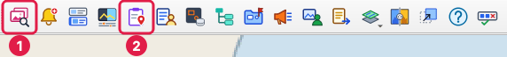
1-1. 画像カタログのドックを出す
ツールバーの 画像カタログ（①）を押します。画面の左に、画像カタログのドック（②）が開きます。
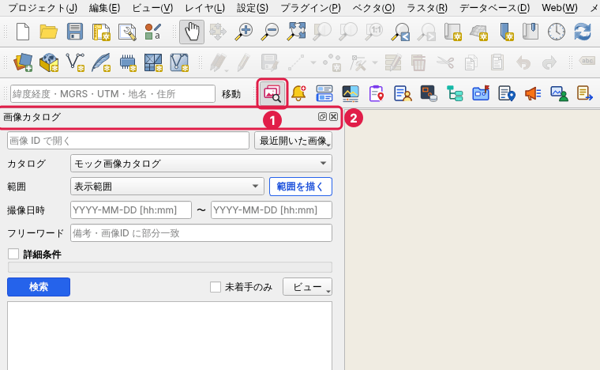
1-2. 探す範囲を選ぶ
範囲（①）の ▼ を押して、どこに写っている画像を探すかを選びます。ふだんは 表示範囲 のままにして、先に地図を見たい場所へ動かしておきます。
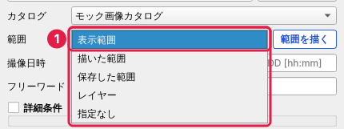
| 選ぶもの | 探す場所 |
|---|---|
| 表示範囲 | 今の地図に見えている範囲（最初はこれ） |
| 描いた範囲 | 横の 範囲を描く で地図に描いた多角形（下の写真） |
| 保存した範囲 | 前に 保存… で名前を付けて保存した範囲 |
| レイヤー | 選んだレイヤーの地物の形（港の形のレイヤーなど） |
| 指定なし | 場所では絞らない |
見たい場所が地図の表示範囲と合わないときは、範囲を描く（①）を押し、地図をクリックして多角形の頂点を置いていきます（②）。最後の頂点はダブルクリックか右クリックで置き、形を閉じます。やり直すときは Esc です。閉じると、範囲は自動で 描いた範囲 になります。
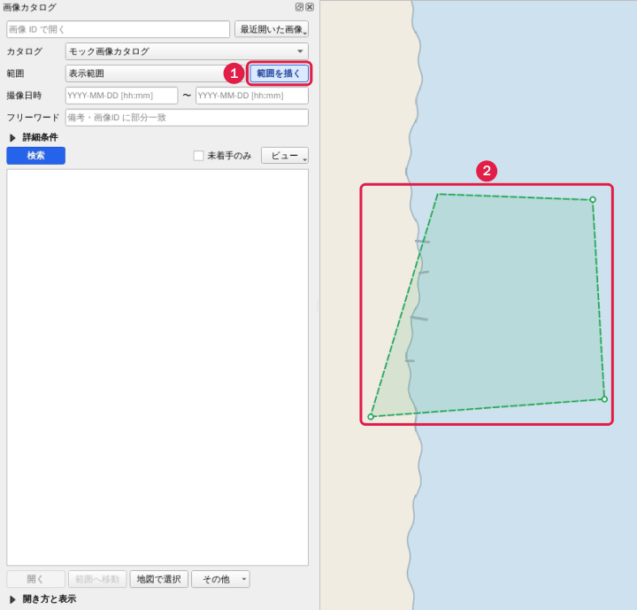
1-3. 撮像日時を入れる
撮像日時 の左（①）に最初の日、右（②）に最後の日を入れます。日付だけなら、その日いっぱい（0:00〜23:59）が入ります。
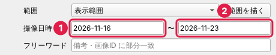
2026/11/9 や 20261109 と書いても読めます。時刻まで入れると、分の単位で絞れます（例: 2026-11-09 10:30）。時刻は、この PC の時刻です。
1-4. 検索する
検索（①）を押します。見つかった件数が横（②）に出て、一覧（③）に画像が新しい順に並びます。
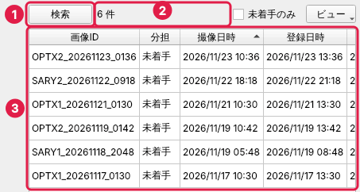
| 列 | 見方 |
|---|---|
| 画像ID | 画像の名前。観測記録にもこの名前で残ります |
| 分担 | 未着手: まだ誰も手を付けていない。作業中（名前）: その人が記録している。完了（名前）: その人が見終わった |
| 撮像日時 | 衛星が撮った日時（この PC の時刻） |
| 登録日時 | 画像がカタログに入った日時 |
まだ誰も見ていない画像だけにするときは、未着手のみ にチェックを入れます。
0 件のときは、次を順に確かめます。範囲が 表示範囲 なら、地図が画像のありそうな場所を映しているか。撮像日時の期間が短すぎないか。詳細条件 にチェックが入っていれば、外してもう一度検索します。
2-1. 画像を選ぶ
一覧で、見たい画像の行（①）をクリックします。地図に、その画像の写っている範囲が橙の枠（②）で出ます。見たい場所に重なっているかを、ここで確かめます。
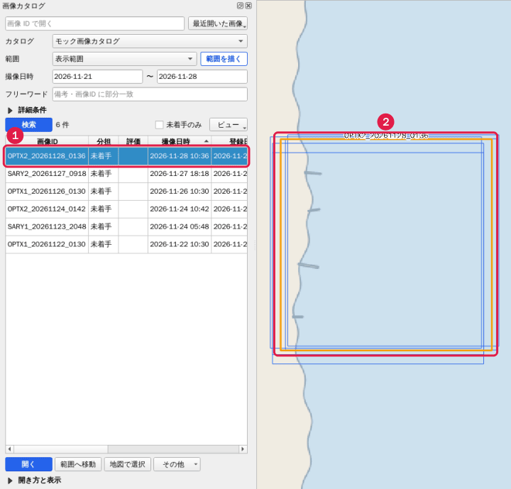
2-2. 開く
開く（①）を押します。行をダブルクリックしても開きます。
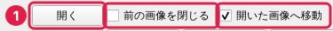
こうなれば OK: 画像が地図に入り、地図がその画像の範囲へ移ります。
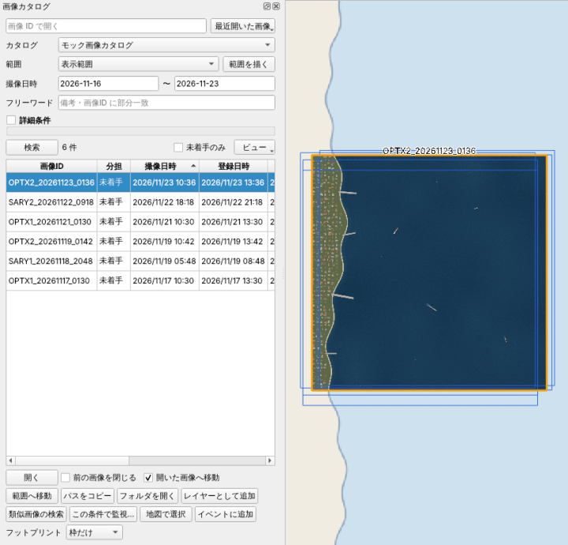
「〇〇のフォルダの選択」という画面が開いたときは、画像が置いてある共有フォルダを選びます。次からは開きません。
3-1. 観測記録のドックを出して、3 か所を確かめる
ツールバーの 観測記録 を押します。画面の右に観測記録のドックが開きます。記録を始める前に、次の 3 か所を確かめます。
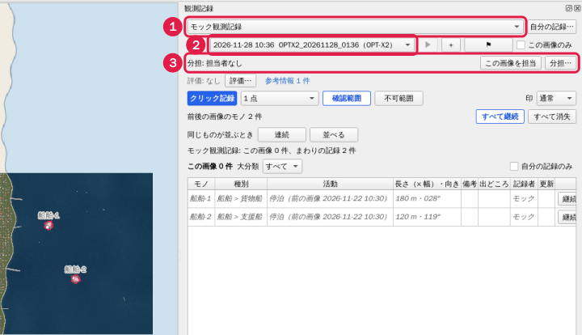
| 番号 | 欄 | 確かめること |
|---|---|---|
| ① | 保存先 | 記録を保存する所。職場で決めた保存先になっているか |
| ② | 画像 | いま開いた画像（撮像日時と画像 ID）が選ばれているか |
| ③ | 分担の行 | だれがこの画像を担当しているか。まだ誰も担当していなければ「担当者なし」 |
前の画像で記録したモノは、地図に白抜きの印で、一覧に灰色の行で出ます。この画像でもいるかどうかは、7. で確かめます。
4-1. クリック記録を押す
クリック記録（①、R）を押します。ボタンが「クリック記録中」になり、この画像は自動で自分の担当になります（②「分担: 自分が担当中」）。
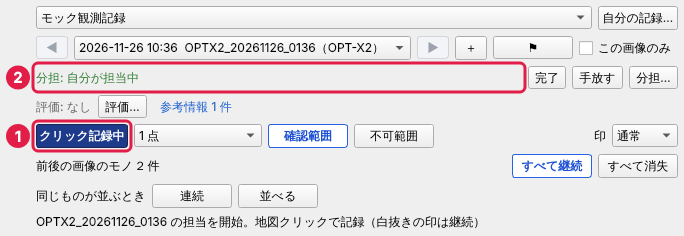
クリック記録中は、地図のクリックが記録になります。地図を動かすときは、マウスのホイールで拡大・縮小し、ホイールを押したままドラッグして移動します。
5-1. 拡大して、記録するモノをクリックする
記録するモノ（①）が見分けられるところまで拡大して、モノの上をクリックします。ドックに記録のフォームが開きます。
6-1. 種別をたどる
フォームのボタンを、大分類（①）→ 種別（②）→ 級（③）の順に押して種別をたどります。押した順に、上の 種別 の欄に「船舶 > 貨物船」のように入ります。押したボタンをもう一度押すと、その段の選択が外れます。
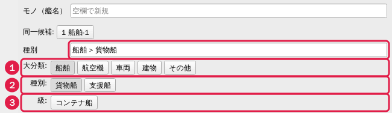
同一候補 のボタンは、近くにいる前の画像のモノです。同じモノなら押すと（Alt+1〜）、そのモノの続きとして記録されます。
6-2. 活動と確度を選ぶ
活動のボタン（①）を押すと、活動 の欄（②）に入ります。数字キー 1〜9 でも選べます。確度（③）の ▼ で、どのくらい確かかを選びます。
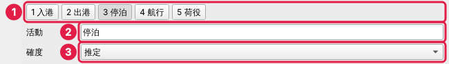
6-3. 備考を入れて記録する
必要なら 備考（①）に気づいたことを書き、記録（②、Enter）を押します。記録は、その場で保存先に保存されます。やめるときは 取消（Esc）です。
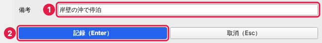
こうなれば OK: 地図のモノに印と名前（①）が付き、一覧に行（②）が増えます。
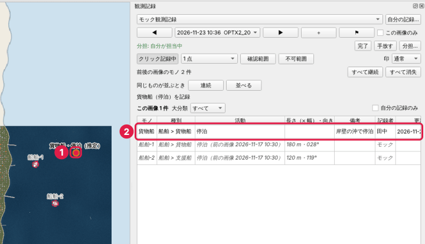
保存できなかったときは、入れた内容のままフォームが戻ります。メッセージを読んで、もう一度 記録 を押します。
ほかのモノも、5. と 6. をくり返して記録します。
7-1. 白抜きの印をクリックする
白抜きの印（①）は、前の画像で記録したモノです。この画像でもいるかを見て、印をクリックします。ドックにそのモノのフォームが開きます。
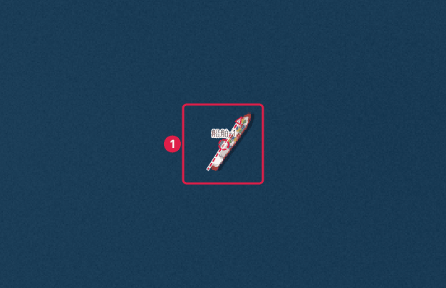
7-2. 継続か消失を押す
まだいれば 継続（①、Enter）、いなければ 消失（②）を押します。活動が変わっていれば、押す前に活動のボタンで選び直します。
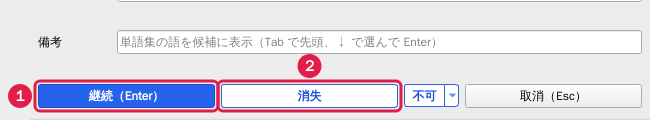
一覧の灰色の行の右端にも 継続・消失 のボタンがあり、同じように記録できます。
7-3. まとめて継続・消失にする
前の画像のモノの数は ① に出ます。全部まだいるなら すべて継続（②）、全部いなくなっていれば すべて消失（③）で、まとめて記録できます。
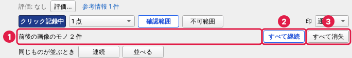
8-1. 一覧を見て、クリック記録を止める
一覧で、この画像で記録したモノ（①）と、まだ確かめていない前の画像のモノ（②、灰色の行）を見分けます。灰色の行が残っていれば、7. と同じように継続か消失にします。全部終わったら、クリック記録中（③）を押して（R）記録を止めます。
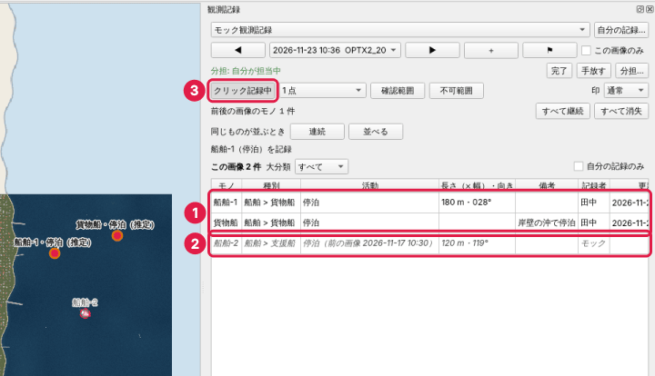
9-1. 完了を押す
見終わったら、分担の行の 完了（①）を押します。
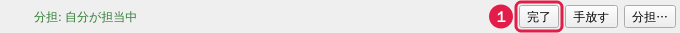
こうなれば OK: 分担の行が「担当者なし（自分の名前 さんが完了済み）」に変わります。
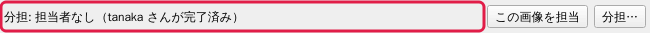
途中でやめて、ほかの人に任せるときは、完了 ではなく 手放す を押します。
9-2. 画像カタログでも完了を確かめる
画像カタログで 検索 し直すと、その画像の 分担 の列（①）が「完了（名前）」になっています。ほかの人にも、見終わった画像だと分かります。
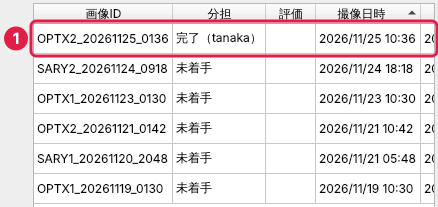
9-3. 次の画像へ進む
観測記録ドックの ◀（①、PageUp）と ▶（③、PageDown）で、開いている画像を撮像日時の順に切り替えます。②の ▼ から選んでも切り替えられます。まだ開いていない画像は、画像カタログから 2. と同じように開きます。
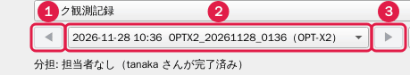
撮りたい場所と期間を依頼として登録し、その依頼がどの日の計画に入ったかを確かめるまでの手順です。依頼を集めて計算し、各システムにファイルを出して採否を入れるのは撮像計画の担当です（撮像計画を計算して出し、採否を入れる）。くわしい説明は 撮像依頼を登録する・その日の撮像予定を見る にあります。
写真と同じ見本データで、本番に書き込まずに 練習モードでやってみる こともできます（練習モードで試す）。チュートリアル… なら、この手順を 1 つずつ案内つきでやってみられます（チュートリアル）。
| 始める前に | |
|---|---|
| 担当 | 撮像を依頼する人（担当と個人設定 で選ぶと、撮像依頼と撮像予定のドックが右に、地点ごとの撮像予定が地図の下に開き、ツールバーには依頼と確認に使うボタンだけが並びます） |
| 使うボタン | ① 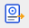 撮像依頼（Ctrl+Alt+Q）② 撮像予定 ③ 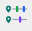 地点ごとの撮像予定 |
| 流れ | 1. 撮像依頼ドックを出す → 2. 依頼の内容を入れる → 3. 一覧で確かめる → 4. たくさんの場所をまとめて依頼する（必要なときだけ） → 5. 計画に入ったかを見る → 6. 状態を読む → 7. 次にいつ撮るかを見る |
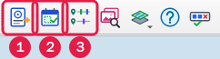
1-1. 撮像依頼のドックを出す
ツールバーの 撮像依頼 を押します。画面の右に撮像依頼のドック（①）が開き、登録済みの依頼が一覧（②）に並びます。

1-2. 自分のグループの依頼だけにする
グループの欄（①）の ▼ を押して、自分のグループ（②）にチェックを入れます。一覧が自分のグループの依頼だけになります。選んだものは次回も同じです。
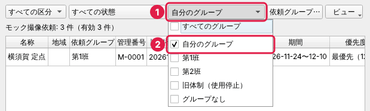
1-3. 新しい依頼のフォームを開く
新規…（①）を押します。依頼のフォームが開きます。
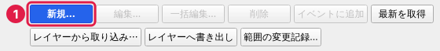
新しい依頼は、前回保存した依頼の条件から始まります（名称・期間・範囲は毎回空です）。
2-1. 名称とグループを入れる
名称（①）に、あとで一覧や撮像予定で見分けられる名前を入れます。管理番号・識別番号（②）は、職場で番号を付けているときだけ入れます。依頼グループ（③）で自分のグループを選びます。自分のグループがまだなければ、依頼グループを作る・変える で作ってから選びます。
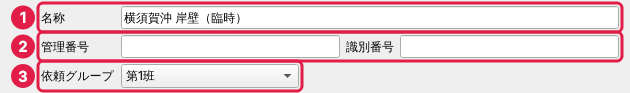
2-2. 区分・達成条件・期間を入れる
区分（①）と 達成条件（②）で、どう撮るかを選びます。期間（③）には、撮ってほしい最初と最後の日（日本時間）を入れます。
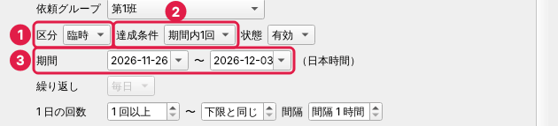
| 撮り方 | 区分 | 達成条件 | ほかに入れるもの |
|---|---|---|---|
| 期間中に 1 回撮ればよい | 臨時 | 期間内1回 | なし |
| 毎日撮る | 定点 | 毎回 | 繰り返し を「毎日」 |
| 決まった曜日・何日おきに撮る | 定点 | 毎回 | 繰り返し を「曜日」か「間隔」にして、曜日か日数を選ぶ |
1 日に何回も撮りたいときは、1 日の回数 に「○ 回以上」「○ 回以下」と回の間隔を入れます。下限の回数が撮れた日が達成になります。ふつうは「1 回以上」のままです。
2-3. 優先度を選ぶ
優先度（①）の ▼ を押して、5 段階から選びます。上ほど優先されます。数値で細かく決めるときは、横の 詳細 で 1〜1000 を入れます（1 ほど高い）。
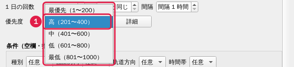
2-4. 撮り方の条件を選ぶ
ここは、空欄・「任意」・「指定なし」のままなら、どれでもよいという意味です。必要なところだけ入れます。
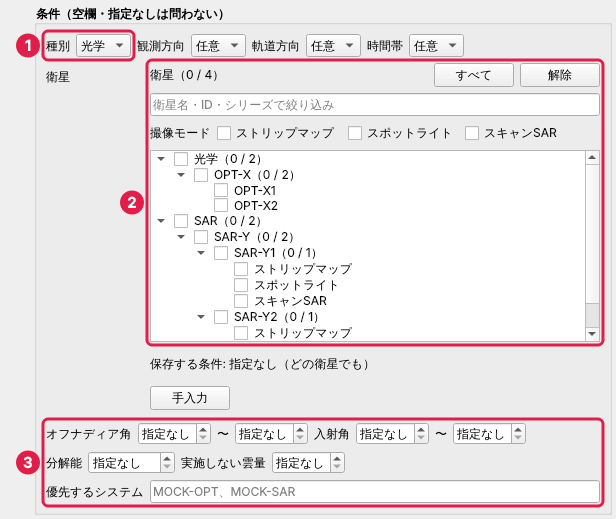
| 番号 | 欄 | 入れるもの |
|---|---|---|
| ① | 種別 | 光学（ふつうの写真。雲があると写らない）・SAR（電波。夜・雲でも撮れる）・任意 |
| ② | 衛星 | 撮る衛星を決めるときだけチェック。チェックなしは、どの衛星でもよい |
| ③ | 角度・分解能・雲量・優先するシステム | 撮り方を細かく決めるときだけ。実施しない雲量 は、雲がこの値以上と予報された時刻には撮らない（光学） |
2-5. 範囲を決める
地図で矩形（①）を押して、地図の上で囲みたい範囲の角から反対の角までドラッグします。形を描くときは 地図で多角形、地点で決めるときは 地図で点（横の km が範囲の一辺）、レイヤーの地物の形を使うときは 選択中の地物 を使います（②）。範囲を決めると、その下（③）に、期間内に衛星が撮れる回数が出ます。
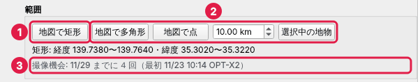
決めた範囲は、地図に出ます（①）。
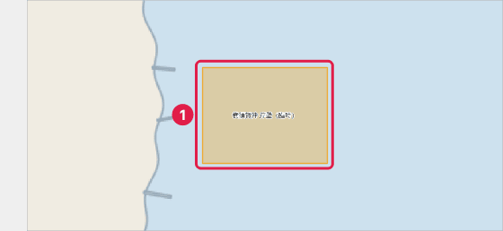
③が赤で「撮像機会なし」のときは、この条件では撮れません。期間を延ばす・種別を任意にする・衛星のチェックを外す、のどれかを試します。
2-6. 依頼者・メモを入れて保存する
依頼者（①）に自分の名前、メモ（②）に撮りたい理由など、計画の担当に伝えたいことを書きます。保存（③）を押します。
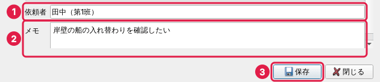
保存できないときは、フォームの下に赤い字で理由が出ます（名称がない、範囲がない、など）。その欄を直して、もう一度 保存 を押します。
3-1. 保存した依頼を見る
保存した依頼が一覧（①）に入ります。これで依頼は終わりです。直すときは、行を選んで 編集…（②）を押し、2. と同じフォームで直して 保存 します。
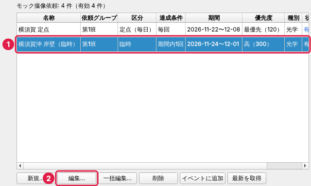
見たい港・岸壁の一覧のように、依頼したい場所がレイヤー（ポリゴン・点・線）になっているときは、地物ごとに 1 件の依頼をまとめて作れます。1 件ずつ登録するときは、ここは飛ばして 5. へ進みます。
4-1. レイヤーを入れて、取り込みを始める
場所のレイヤーを QGIS に入れておき（地図に紫の形で出ているもの）、撮像依頼ドックの レイヤーから取り込み…（①）を押します。
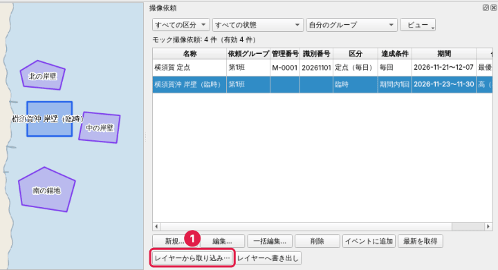
4-2. レイヤーと属性を選ぶ
取り込む レイヤー（①）を選びます。依頼の名称にする属性（②）を選びます。管理番号にする属性があれば、それも選びます（③）。

4-3. 取り込み方を確かめて次へ進む
一部の地物だけにするときは、先に地図で地物を選んでから 選択中の地物のみ（①）にチェックを入れます。点の地物は、点の範囲の一辺（②）の正方形が範囲になります。範囲・名称・番号だけ取り込み…（③）のまま 次へ（④）を押します。
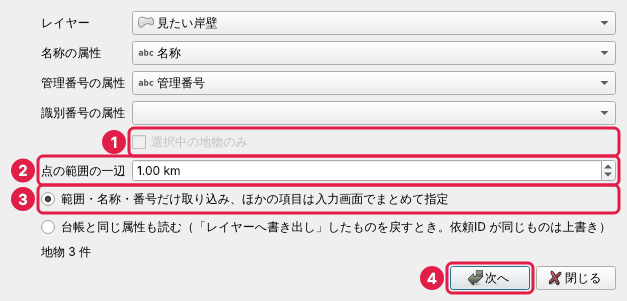
4-4. 残りの項目を 1 回だけ入れる
依頼のフォームが「レイヤーから取り込み」として開きます。名称（①）には地物ごとの名前が入っています。区分（②）・期間（③）・優先度・条件など残りの項目は、2. と同じように 1 回だけ入れます。全部の地物に同じ値が入ります。
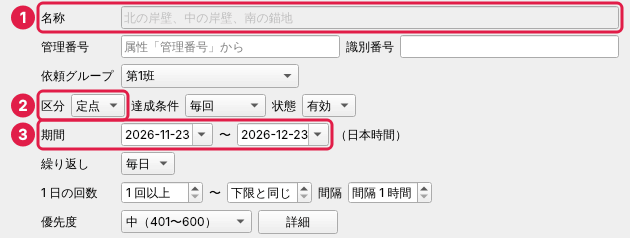
フォームの 範囲 の欄（①）に、取り込む地物の数が出ます。確かめて 保存（②）を押します。
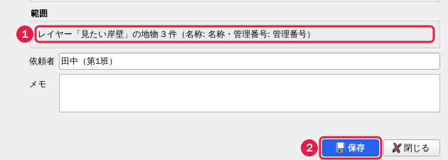
取り込む範囲は、地図に橙で出ます。
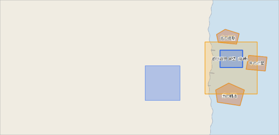
こうなれば OK: 状況欄に「3 件を取り込み」（①）と出て、地物の数だけ依頼が一覧（②）に入ります。
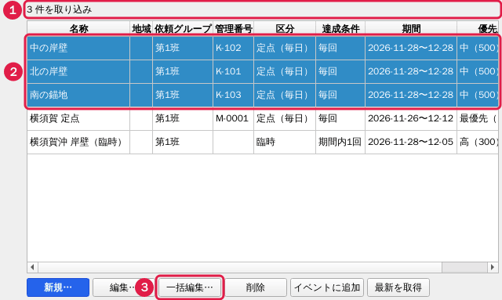
あとで 1 件ずつ直すときは 編集…、まとめて直すときは Ctrl・Shift + クリックで行を選んで 一括編集…（③）を押します。
撮像計画の担当が計算・書き出しをしたあとに見ます。
5-1. 撮像予定のドックを出す
ツールバーの 撮像予定 を押します。上にカレンダー（①）、下にその日の計画の一覧（②）が出ます。
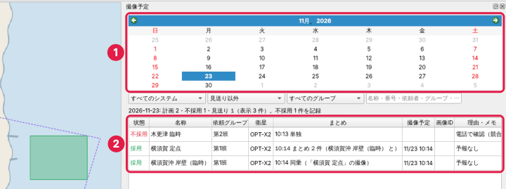
5-2. 日を選ぶ
カレンダーで見たい日（①）をクリックします。計画のある日は太字で出ます。緑の太字は計画に入ったもの（採用・要求外）がある日、青の太字は採否がまだ分からないもの（不明）だけの日です。
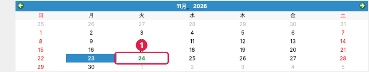
5-3. 自分のグループの依頼だけにする
一覧の上のグループの欄（①）の ▼ を押して、自分のグループ（②）にチェックを入れます。
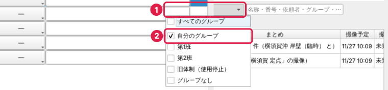
6-1. 自分の依頼の行を読む
自分の依頼の行（①）の 状態 を見ます。
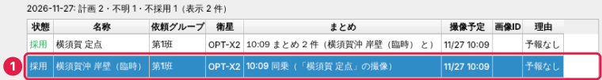
| 状態 | 意味 | 次にすること |
|---|---|---|
| 採用 | システムの計画に入った | 画像が届くのを待つ。届くと画像カタログで探せる |
| 不明 | システムの返事がまだない | あとでもう一度見る |
| 不採用 | システムの計画に入らなかった | 理由を 理由・メモ で見る。期間内 1 回の依頼なら、次の日以降の計算でまた候補になる |
| 見送り | その日はシステムに出さなかった | 不採用と同じ。期間内 1 回の依頼なら、次の日以降の計算でまた候補になる |
ほかの列は次のとおりです。
| 列 | 見方 |
|---|---|
| まとめ | 撮り方。「10:09 まとめ 2 件（… と）」は近くの依頼と 1 回の撮像でまとめて撮ること、「同乗」はほかの依頼の撮像で一緒に撮ること、「単独」はこの依頼だけの撮像 |
| 撮像予定 | システムが返してきた撮像の日時 |
| 理由・メモ | 見送り・不採用の理由など |
6-2. 見送りも表示する
最初は、見送りは一覧に出ません。見送りも見るときは、状態の欄（①）の ▼ を押して 見送り（②）にチェックを入れます。
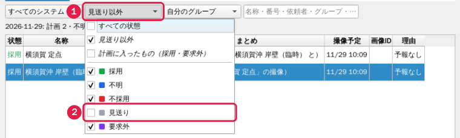
画像が入って撮像済みになると、状態は自動で「採用」になり、画像は 画像カタログ で探せます。
7-1. 地点を足して、タイムラインを見る
ツールバーの 地点ごとの撮像予定 を押します。地図で地点を追加（①）を押し、地図で依頼した場所をクリックします。その地点の計画がタイムライン（②）に日ごとに並び、名前の下に「次」の撮像（日時・状態・衛星）が出ます。
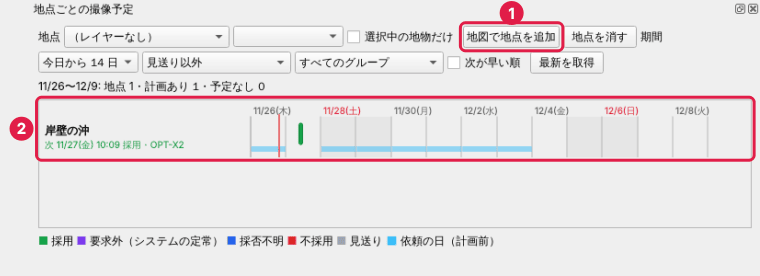
タイムラインの色は、下の凡例のとおりです。緑が採用、水色の帯は依頼がまだ計画前の日です。
依頼台帳から対象日の計画を計算し、調整システム（各衛星システム）に渡すファイルを書き出し、返ってきた採否を入れるまでの手順です。くわしい説明は 毎日の撮像計画ファイルを出力する・その日の撮像予定を見る にあります。
写真と同じ見本データで、本番に書き込まずに 練習モードでやってみる こともできます（練習モードで試す）。チュートリアル… なら、この手順を 1 つずつ案内つきでやってみられます（チュートリアル）。
| 始める前に | |
|---|---|
| 担当 | 撮像計画の担当 |
| 使うボタン | ① 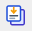 撮像計画ファイル出力② 撮像予定 |
| 流れ | 1. 計算する → 2. 一覧を確かめる → 3. 書き出す → 4. 返ってきた採否を入れる → 5. 電話などで聞いた採否を入れる |
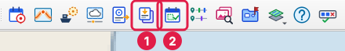
1-1. 対象日を選んで計算する
ツールバーの 撮像計画ファイル出力 を押してドックを出します。対象日（①）に計画を作る日を選び、計算（②）を押します。
こうなれば OK: 状況欄（①）に候補・採用・見送りの件数が出て、依頼が一覧（②）に並びます。システムごとの上限と優先度に合わせて、採用と見送りが決まっています。
2-1. 列を読み、採用を変える
採用 の列（①）にチェックが入った行がファイルに出ます。チェックを外すと見送り、入れると枠を超えても採用になります。
| 列 | 見方 |
|---|---|
| 衛星・撮像時刻 | 撮る衛星と、その衛星が上を通る時刻 |
| 優先度 | 依頼の優先度と、この日の計算での優先度（矢印の右） |
| 結果・理由 | 「採用：まとめ 2 件（… と 1 回の撮像）」「見送り：撮像機会なし」など、そうなった理由 |
2-2. 地図で確かめる
地図に表示（①）にチェックを入れます。
依頼の範囲（採用は緑、まとめは青、見送りは灰）と撮像の範囲（紫の破線）が地図に出ます。行を選ぶと、その依頼へ地図が移ります。
3-1. 出力先を確かめて書き出す
出力先（①）のフォルダを確かめて、書き出し（②）を押します。出力先が設定ファイルで決まっているシステムは、そちらに書きます。
3-2. ファイル名と件数を確かめる
システムごとのファイル名と件数が出ます。確かめて はい（①）を押します。
こうなれば OK: 状況欄（①）に書き出した件数が出て、出した内容が出力履歴に残ります。書き出したファイルを調整システムに渡します。
4-1. 撮像予定で対象日を開く
ツールバーの 撮像予定 を押します。カレンダーで対象日（①）を選びます。書き出したばかりの依頼は、一覧（②）で「不明」です。システムから採否のファイルが返ってきたら、結果ファイルの取り込み…（③）を押してそのファイルを選びます。
ファイルの行の日（対象日、なければ撮像予定の日）に記録するので、カレンダーでほかの日を表示していてもかまいません。依頼していない計画（要求外）は、その撮像予定の日に入ります。
4-2. 読み取った件数を確かめる
読み取った採用・不採用の件数が出ます。確かめて 取り込み（①）を押します。
こうなれば OK: ファイルにあった依頼が「採用」（②）になります。ファイルになかった依頼は「不明」（①）のままです。まとめて撮る依頼は、同じ撮像のほかの依頼にも同じ採否が付きます。
5-1. 行を選んで採否を押す
「不明」のままの行（①）を選びます。必要なら 理由（②）を書き、不採用（③）か 採用 を押します。
こうなれば OK: 行の状態（①）が変わり、理由が 理由・メモ に入ります。間違えたときは、行を選んで 不明に戻す（②）を押します。
これで、その日の計画が採用・不採用・見送りに分かれました。依頼した人は同じ 撮像予定 で確かめます（撮像を依頼して、計画に入ったか確かめる）。画像が届いたら、撮像計画ファイル出力の 照合… で、撮れたかを画像カタログと突き合わせます。
ドックの一覧は、見出しを右クリックすると列を出したり隠したり、順番を変えたりできます。右クリックした列は この列を左へ・この列を右へ・この列を先頭へ・この列を末尾へ で動かし、まとめて変えるときは 列の表示と順番… でチェックと 上へ・下へ を使います（見出しのドラッグでも動かせますが、設定ファイルでドラッグを止めている場合はメニューだけです）。並びは一覧ごとに覚えます。画像カタログ・観測記録・撮像依頼の一覧の横の ビュー では、今の見え方（列・並べ替え・絞り込み）に名前を付けて保存し、あとで 1 回で戻せます。どれもあなたの PC だけの設定で、ほかの人には影響しません。
画像カタログ ドック（Ctrl+Alt+I）で、届いた衛星画像を探します。
監視で見つかった画像は、地図の場所いっぱいの 新着画像（大きな画面）（Ctrl+Alt+N、メッセージバーの「新着画像 n 件」の 見る でも）で、カードにして順に見られます。地図の上に「地図｜新着画像」のタブが出るので、タブで地図と行き来します。
自分がいつも見ている港・基地・海域などを 関心地域・地点 ドックに入れておくと、新着画像のカードの写っている地物のいちばん上に、その画像に入っているものが自分の色で出ます。保存先はサーバーなので、別の PC でも同じものが出ます（ほかの人のものは出ません）。
35.6812, 139.7671・35°40'52"N 139°46'1"E・MGRS など）を入れて Enter。地名が使える設定なら、地名や住所も入れられます（候補から ↑↓ と Enter で選ぶ）境界・地名・作業中の図形など、画像を開いても隠したくないレイヤーは、レイヤーパネルで右クリックして 一番上に固定。レイヤー名の横にピンの印が出て、いつもレイヤーパネルの一番上（地図ではいちばん手前）に置かれます。
ほかのレイヤーの地物を、すでにあるレイヤー（ArcGIS のフィーチャレイヤーも）に足せます。ArcGIS の「アペンド」と同じ操作です。メニューの アペンド（既存レイヤーへ追加）…（処理ツールボックスの「MIKAGE › レイヤー」にもあります）。
…/FeatureServer/0）地震・風水害・事故などの対応で使った画像・観測記録・撮像依頼を、ひとつのイベントにまとめておけます。メニューかツールバーの イベント。
撮像計画 ドック（Ctrl+Alt+K）で、どの衛星がいつ対象を撮れるかを計算します。
撮像依頼 ドック（Ctrl+Alt+Q）で、いつからいつまで・どこを・どの条件で撮るかを依頼台帳に登録します。登録から計画の確認までを画面の写真で追うなら 撮像を依頼して、計画に入ったか確かめる。
依頼グループ…（「撮像依頼」ドックのグループの欄の横の 依頼グループ… からも）で、依頼グループの一覧を見られます。一覧には、グループ名・メンバー・そのグループの依頼の件数・使用中か使用停止か・メモが出ます。自分がメンバーのグループは太字です。グループを作ったり変えたりできるのは、担当が「撮像を依頼する人」か「撮像計画の担当」の人です。ほかの人は一覧を見るだけです。
撮像計画ファイル出力 ドックで、対象日を選んで 計算。依頼台帳から、衛星システムごとの上限と優先度に合わせて依頼を割り振ります。
計算・書き出し・採否の入力を画面の写真で追うなら 撮像計画を計算して出し、採否を入れる。
衛星の障害情報… で、衛星の障害（姿勢制御の不具合、電力不足、計画停止など）を登録すると、撮像計画・撮像計画ファイル出力・上限シミュレーションの計算に入ります。登録・編集・復旧・削除は撮像計画の担当、撮像を依頼する人は見るだけです。
撮像予定 ドックで、カレンダーの日を選ぶと、その日の計画を一覧と地図に出します。出した依頼が各システムの計画に入ったか（採用・不採用・不明）、見送ったもの、システムが依頼なしで入れた計画（要求外）が色分けで分かります。
地点ごとの撮像予定 ドック（地図の下に開きます）で、地点ごとのこの先の撮像計画をタイムラインで見られます。地点が縦に並び、横に時間が伸びます。見るだけの画面で、何も書き換えません。
観測記録 ドック（Ctrl+Alt+O）で、画像ごとに「いつ・どこに・何（モノ）が・何をしていたか（活動）」を記録します。同じモノは画像をまたいで追いかけられます。
画面の写真つきの手順は 画像を探して記録し、担当を完了する にあります。
港湾_20261120_0930.tif なら 2026-11-20 09:30）。撮像日時の分からない GeoTIFF（背景の地図など）は背景として扱い、記録先になりません。そうした画像に記録するときは、レイヤーパネルでそのレイヤーを右クリックして 観測記録の画像にする を選び、ドックで撮像日時を入れます。もう一度選ぶと背景に戻ります。カタログ外の画像は、レイヤーパネルで付けたレイヤー名でドックと記録に出ます（名前を付けていなければファイル名）。クリック数は L で 1 → 2 → 3 → 4 点と切り替えます（最初の設定でも選べます）。
| クリック数 | 打つ順 | 記録されるもの |
|---|---|---|
| 1 点 | モノの位置 | 位置 |
| 2 点 | 後端 → 前端（船尾 → 船首、機尾 → 機首） | 中心・長さ・向き |
| 3 点 | 後端 → 前端 → 片側の側面 | 上に加えて幅（中心線から左右同じ幅とみなす） |
| 4 点 | 後端 → 前端 → 両側の側面 | 上に加えて幅（中心は両側面の中間） |
打っている間は外形の四角が地図に出ます。Esc で最後の 1 点を取り消します。
駐車場の車・駐機場の航空機・岸壁の船など、同じものが並んでいるときは、1 つを見本にして残りを手早く記録します。まず 1 つをふつうに記録します（2〜4 点で測っておくと、長さ・幅・向きも写されます）。フォームで最後に記録したものが見本です（ほかの記録は、印をクリックしてフォームで開き 開いている記録を見本に）。見本の記録を一覧などで消すと、この画像のいちばん新しい記録が見本になります。Backspace の取り消しも、すでに消した記録は飛ばします。
| やり方 | 操作 |
|---|---|
| 連続（S） | ダブルクリックで見本と同じ向きのまま 1 つ記録。向きが違うものは、中心で押して前端の方へドラッグ。前の画像のモノ（白抜きの印）をダブルクリックすると継続 |
| 並べる（G） | 列の両端をクリック（格子はさらに最後の列の始め）。数を合わせ（地図で ＋・−）、空いている所はクリックで外して Enter |
| 似たものを探す | 地図の表示範囲で見本に似たものを画像から探し、AI結果 に並べます。正・誤検出で確かめて取り込みます。上位をいくつか確かめてからもう一度押すと、それを学んで探し直します（誤検出がぐっと減ります） |
名前は「乗用車-12」のように順に付きます。Backspace で最後に記録したものを取り消します（並べたものはまとめて）。Esc で終わります。「連続」「並べる」を押すと、作成中の新しい記録（開いているフォームや打ちかけの点）は外れます（フォームで開いている既存の記録はそのまま）。
メニュー 観測記録 ▸ 自分の記録…（観測記録ドックの右上の 自分の記録… でも）で、自分が作った記録が画像をまたいで 1 つの一覧に出ます。画像を選んでいなくても開けます。
メニュー 観測記録 ▸ 引き継ぎメモ…。期間と申し送りを入れて 作成 すると、その間の記録・通報・分担の件数がまとまった文章ができます。手で直してから 保存（次の人の画面の上に出ます）か コピー。
「文章の手伝い」を用意しているときは、作成 の右の 申し送りの下書き で、メモの一覧から次の人への申し送りを 2〜4 文で下書きします（15〜20 秒ほど）。メモにある一覧（期限が近い依頼・担当中の画像・通報）のことだけを書かせ、メモにないことや「〜してください」のような文は外して、外した文を下に出します。置き換え か 末尾に追加 で申し送りに入ります。数字などは必ず一覧と見比べてください。
Excel などで作った分類の一覧を、そのまま分類体系にできます。大分類・種別・級のように、左から階層ごとに列が並んだ表（1 行目が列名）を使います。メニュー 観測記録 ▸ 分類体系の取り込み…、または 分類体系の編集 ドックの 取り込み ▾ ▸ 表から取り込み。
通信やサインインの失敗で保存できなかった記録は消えずに PC に残り、ドックに橙色で「送信待ち n 件…」と出ます（右下のステータスバーの「送信待ち n 件」と同じ一覧です）。押して一覧を開き、
橙色の「要確認」は、ほかの人が後から同じ記録を直していたものです。自動では送りません。「フォームで開く」で今の内容を確かめてから保存してください。
画像補正 ドックで、選んでいる画像（レイヤーパネルで選んだラスター）の見え方を変えます。画像のファイルそのものは変わりません。
パンクロ（白黒・高解像度）とマルチスペクトル（カラー・低解像度）の画像があるとき、カラーの画像を、地図に見えている範囲だけその場でパンシャープンして表示します。ファイルは作りません。
SAR 画像は、山や高い建物ほど衛星の側に倒れて写り、位置もずれていることがあります。そのまま記録を付けると記録もずれるので、先に クイック幾何補正 で画像を正しい位置に合わせます。画像のファイルそのものは変わりません。
dem。ArcGIS のイメージサーバーなど）で、倒れ込みを戻します。パネルに撮像方向（入射角・衛星の方角）が出ていればそのまま。「分からない」と出たら 撮像方向を入力する にチェックして、衛星の方角と入射角を入れますどれも QGIS の 設定 ▸ キーボードショートカット… に名前付きで並んでいて（「観測記録」などで検索）、そこで変えられます。
| キー | 操作 |
|---|---|
| Ctrl+Alt+O | 観測記録ドックを開く |
| Ctrl+Alt+I | 画像カタログを開く |
| Ctrl+Alt+K | 撮像計画ドックを開く |
| Ctrl+Alt+Q | 撮像依頼ドックを開く |
| Ctrl+Alt+N | 新着画像（大きな画面）と地図の切り替え |
| Ctrl+Alt+PageDown ／ Ctrl+Alt+PageUp | 観測記録: 次の画像 ／ 前の画像 |
| Ctrl+Alt+E | 観測記録: クリック記録の開始・終了 |
| Ctrl+Alt+D | 観測記録: 地図の印を隠す・戻す |
| ドック | キー | 操作 |
|---|---|---|
| 観測記録 | PageDown ／ PageUp | 次の画像 ／ 前の画像 |
| 観測記録 | R | クリック記録の開始・終了 |
| 観測記録 | 1〜9 | 活動の n 番目を選ぶ |
| 観測記録 | Alt+1〜Alt+5 | 同一候補の n 番目を選ぶ |
| 観測記録 | Enter・Ctrl+Enter | フォームの記録・更新（記録中は地図を触っていても効く） |
| 観測記録 | Esc | 最後の点の取り消し・入力の終了 |
| 観測記録 | L | クリック数の切り替え（1 → 2 → 3 → 4 点） |
| 観測記録 | A | 確認範囲の記録 |
| 観測記録 | K | 不可範囲（雲など）の記録 |
| 観測記録 | H | 地図の印を隠す・戻す |
| 観測記録（一覧） | Delete | 選んだ記録の削除（確認あり） |
| 撮像計画 | Ctrl+Enter ／ Esc | 計算 ／ 中止 |
| 分類体系の編集 | Alt+↑↓ ／ Insert ／ Delete | 並べ替え ／ 下に追加 ／ 削除 |
| こんなとき | まず試すこと |
|---|---|
| 「…に失敗: …［E101］」のようにコードが出る | 帯の 対処法 を押すか、ドックの下の行をクリックすると、エラーコード一覧 のそのコードの原因と対処が開きます |
| 黄色い帯に「設定ファイル」の「問題 n 件」 | 帯の 設定… で中身を見る。直せないときは画面を管理者へ |
| 一覧が空・「読み込めません」と出る | サインインの問題なら「設定…」の認証設定を確かめる。続くときは出た表示を管理者へ（管理者はメニュー 接続と表の点検… で調べられます） |
| メニューに項目がない・「担当「…」の機能です」と出る | ほかの担当の機能です。自分の作業なら、メニュー 担当と個人設定… でその担当にもチェックする |
| サーバーが止まっている・右下に「⚠ オフライン作業中」 | そのまま作業を続けられます。保存したものは青い「送信待ち」になり、つながったら送るか聞かれます（サーバーにつながらないとき） |
| 右下に「送信待ち n 件」が残っている | 押して 送信待ちの一覧… から「送信」。送らないなら「捨てる…」（つながったとき、保存できなかった記録） |
| 「オフライン中で控えなし」（E107）と出る | サーバーが止まる前に一度も読んでいない一覧です。つながってから開き直す。止まるのがわかっているときは、先に使う一覧を一度開いておく |
| 画像が開けない | 理由が表示されます。「〇〇のフォルダの選択」という画面が開いたら画像の共有フォルダを選ぶ。違うフォルダを覚えてしまったら、メニュー 設定… の「画像のフォルダの対応」→ 対応を消去 |
| 起動したばかりで撮像依頼・イベントなどの一覧が出るまで待つ | QGIS が起動すると、これらの一覧は裏で先に読み込まれます（先読み）。数秒たってから開けばすぐ出ます。いつも遅いときは、ログメッセージの「MIKAGE」タブにある「起動 … 先読み: …」の行を管理者へ |
| 大きな画像の表示が遅い | 初めて開く大きな画像は、縮小版（ピラミッド）ができるまで遅いことがあります（職場の設定で自動で作られます）。できたあとは速くなります。MIKAGE は描画が速くなる設定を自動で使っています。中身と、自分で見直せる設定（電源の設定など）はメニュー 設定… の「地図の描画」→「詳しく…」。16 ビットの画像は、そこで「画像の色付けを MIKAGE が速く描く（試作）」をオンにすると、同じ色のまま約 2.8 倍速く描けます |
| ときどき画面がカクつく・止まる | 0.3 秒以上止まると、ログメッセージの「MIKAGE」タブに「画面が N 秒止まった（裏の処理: …）」と出ます。止まったときの行を管理者へ。裏の処理の名前（新着画像の確認、ピラミッドの作成など）で原因が分かります |
| 記録が保存できない | 入力は消えていません。保存できなかった記録（送信待ちの一覧）の「送信」 |
| 「ほかの人が先に変更」 | 詳細 ▸ 最新を取得 を押してから、もう一度直す |
| 「○○ さんが担当中」で記録を始められない | 1 画像 1 人の決まりのときです。別の画像にするか、担当の人に「ほかの人に渡す」を頼む |
| 消した記録を戻したい | 観測記録の 詳細 ▸ 削除済みも表示 から戻す |
| ドックが見当たらない・画面の外にある | メニュー ドックを初期位置に戻す |
| ツールバーにボタンがない | ツールバーのボタン… で足す。全部の機能はメニューからも開けます |
| キーが効かない | ドックのキー（R・1〜9 など）は、そのドックを一度クリックしてから。どこでも効くのは Ctrl+Alt のキーです |
| 背景地図が出ない | 閉じたネットワークではインターネットの地図は出ません。ツールバーの 背景地図 で社内の地図を選ぶ |
| AI が「onnxruntime がない」と言う | Windows 版のプラグイン（名前が -win64 の zip）を入れてもらう。管理者に相談 |
| 黄色い帯に「監査ログ」の「送信先フォルダに送れません」 | 作業はそのまま続けられます。操作の記録はこの PC に残り、送れるようになったら自動で送ります。続くときは管理者へ（管理者はメニュー 監査ログ… で確かめられます） |
| AutoMap で「MIKAGE に接続できない」と出る | QGIS を起動してから送り直す。起動しているのに出るときは、MIKAGE の入った QGIS を 2 つ開いていないか確かめる（受け取れるのは先に開いた方）。続くときは管理者へ |
| 前回の入力が残っていて困る | メニュー 設定… の「入力の初期値」→「覚えた値を消去」 |
管理者に聞くときは、何をしたら・どんな表示が出たか（メッセージバーの文や画面の写し）を添えると早く解決します（管理者の担当なら 接続と表の点検… の 結果をコピー も）。出たエラーは監査ログにも自動で記録されるので、おおよその時刻を伝えると管理者が詳しい内容を確かめられます。
うまくいかなかったとき、MIKAGE は「記録の取得に失敗: サーバーに接続できない［E101］」のように、何に失敗したか・理由・エラーコードを表示します。コードは原因ごとに決まっていて、どの画面でも同じ原因なら同じコードです。
「（管理者に連絡: …）」と出たときは、設定ファイルや保存先の表を管理者が直すものです。出た文とコード、おおよその時刻を管理者に伝えてください。サーバーの住所や詳しい理由はログメッセージの「MIKAGE」タブと監査ログに残るので、管理者が確かめられます。
| コード | 画面の表示 | 原因 | 対処 |
|---|---|---|---|
| E101 | サーバーに接続できない | この PC からサーバーにつながりません。ネットワークが切れているか、サーバーが止まっています。 | ネットワーク（有線・Wi-Fi・VPN）を確かめ、しばらくしてからやり直してください。サーバーが止まっている間も、右下に「⚠ オフライン作業中」と出ていれば作業を続けられます（保存したものは送信待ちになります）。続くときは、コードと時刻を管理者に伝えてください。 |
| E102 | サーバーの応答がない（時間切れ） | 決まった時間のうちにサーバーが答えませんでした。混んでいるだけのこともあります（朝に大勢が一度に始めたときなど）。 | 1〜2 分待ってから、もう一度やり直してください。続くときは、コードと時刻を管理者に伝えてください。 |
| E103 | サーバーの中でエラー | サーバーが要求を受け取りましたが、サーバーの中で処理に失敗しました。 | しばらくしてから、もう一度やり直してください。続くときは、コードと時刻を管理者に伝えてください。 |
| E104 | サーバーが要求を受け付けない | サーバーが要求を断りました。条件の書き方、表の作り、サーバーの設定が合っていないときに起きます。 | 条件を入れたときは、条件を見直してやり直してください。続くときは、コードと時刻を管理者に伝えてください。 |
| E105 | サーバーの応答を読めない | サーバーの答えが、MIKAGE が読める形ではありませんでした。設定の URL が別のページを指しているか、途中の装置（プロキシのサインイン画面など）が別のページを返しています。 | ブラウザで一度サインインしてから、やり直してください。続くときは、コードと時刻を管理者に伝えてください。 |
| E106 | サーバーの応答が大きすぎる | サーバーの答えが、MIKAGE が一度に受け取れる大きさを超えました。 | 期間や範囲を狭めて、やり直してください。 |
| E107 | オフライン中で控えなし | サーバーにつながらないため、オフライン作業中です。まだ一度も開いていない一覧は、この PC に控えがありません。 | サーバーにつながってから開き直してください。止まるのが分かっているときは、使う一覧を先に一度開いておくと、止まっている間も控えで見られます。 |
| E108 | 処理サービスで失敗 | サーバーの処理サービス（ArcGIS の GP サービス・OGC API の処理）が、サーバーの中で失敗しました。 | 入力（図形・値）を見直して、もう一度やり直してください。続くときは、コードと時刻を管理者に伝えてください。 |
| E109 | 処理サービスとして使えない URL | 入力した URL が、MIKAGE の使える処理サービス（ArcGIS の GP サービス・GP タスク・OGC API – Processes）ではありません。 | URL を確かめてください。分からないときは管理者に聞いてください。 |
| E110 | この PC の中の通信を始められない | この PC の中で使う通信の口（ポート）を開けませんでした。ほかのソフトか、もう 1 つの QGIS が使っています。 | MIKAGE の入った QGIS を 2 つ開いていたら、片方を閉じてください。続くときは、コードと時刻を管理者に伝えてください。 |
| コード | 画面の表示 | 原因 | 対処 |
|---|---|---|---|
| E201 | サインインの期限切れ | サーバーへのサインインの期限が切れたか、サインインが取り消されました。 | もう一度やり直してください（MIKAGE がサインインし直します）。続くときは QGIS を再起動して、サインインし直してください。 |
| E202 | 使う権限がない | サインインした利用者に、この表を読む・書く権限がありません。 | 管理者に権限を頼んでください。 |
| E203 | サインインが必要 | このサーバーはサインインが必要ですが、サインインの設定がありません。 | 管理者に、サインインの設定（認証設定）を頼んでください。 |
| E204 | サインインの設定を使えない | QGIS のサインインの設定（認証設定）が見つからないか、QGIS のマスターパスワードが入っていません。 | QGIS がマスターパスワードを聞いてきたら入れてください。続くときは管理者に連絡してください。 |
| E205 | 利用者名が分からない | 記録に残す利用者名を、この PC から得られませんでした。 | 管理者に連絡してください。 |
| E206 | この担当では使えない | ほかの担当の機能か、設定ファイルで使わないことにした機能です。 | 自分の作業なら、メニュー「担当と個人設定…」でその担当にもチェックしてください。 |
| コード | 画面の表示 | 原因 | 対処 |
|---|---|---|---|
| E301 | ほかの人が先に変更 | 読み込んだあとに、ほかの人が同じものを変更しました。上書きしないように、保存を止めています。 | 「最新を取得」を押してから、もう一度変更してください。 |
| E302 | ほかの人が削除済み | 読み込んだあとに、ほかの人が同じものを削除しました。 | 「最新を取得」を押して、確かめてください。 |
| E303 | ほかの人が担当中 | 1 画像 1 人の決まりのとき、ほかの人がこの画像の担当になっています。 | 別の画像にするか、担当の人に「ほかの人に渡す」を頼んでください。 |
| E304 | 件数が上限を超えた | 一度に取得できる件数（上限）を超えたため、途中で止めました。一部だけを見せて間違えないように、何も取得していません。 | 期間・範囲・条件で絞ってから、やり直してください。古い行は管理者に整理を頼んでください。 |
| E305 | サーバーが保存を受け付けない | サーバーが行の追加・変更・削除を断りました（値の長さや形、権限、ほかの人が先に削除したなど）。何件かのうちの一部のときは、ほかの行は保存されています。 | 「最新を取得」を押してから、残りをもう一度保存してください。続くときは、コードと時刻を管理者に伝えてください。 |
| コード | 画面の表示 | 原因 | 対処 |
|---|---|---|---|
| E401 | ファイル・フォルダがない | 指定した場所にファイルかフォルダがありません。移動・削除されたか、共有フォルダにつながっていません。 | 場所を確かめてください。共有フォルダなら、エクスプローラーで開けるか確かめてください。 |
| E402 | ファイルに書き込めない（使用中・権限） | ファイルかフォルダに書き込めません。ほかのソフトで開いているか、書き込む権限がありません。 | Excel などで開いていたら閉じてから、やり直してください。直らないときは、別の場所に保存してください。 |
| E403 | ディスクの空きがない | 保存先のディスクがいっぱいです。 | 不要なファイルを消すか、別の場所に保存してください。 |
| E404 | ファイルを読めない（形式が違う・壊れている） | ファイルの中身が、期待した形式ではありません。別の種類のファイルか、途中で切れたファイルです。 | 選んだファイルが正しいか確かめてください。作り直せるなら作り直してください。 |
| E405 | 文字コードを読めない | ファイルの文字コードが、UTF-8 でも Shift_JIS でもありません。 | 表計算ソフトで「UTF-8」か「Shift_JIS」を選んで保存し直してから、取り込んでください。 |
| E406 | ファイルが大きすぎる | ファイルが、この操作で扱える大きさを超えています。 | 小さく分けるか、範囲を狭めてください。 |
| E407 | ファイルを開けない | ファイルかフォルダを開けませんでした（上のどれにも当たらない理由）。 | 場所と権限を確かめてから、やり直してください。続くときは、コードと時刻を管理者に伝えてください。 |
| コード | 画面の表示 | 原因 | 対処 |
|---|---|---|---|
| E501 | 画像の場所が分からない | 画像カタログのこの行に、画像ファイルの場所が書かれていません。 | 管理者に連絡してください。ファイルのない画像として記録はできます。 |
| E502 | 画像のフォルダが見つからない | 画像のある共有フォルダが、この PC から見つかりません。 | 「フォルダを選んで」と出たら、画像の共有フォルダを選んでください。違うフォルダを覚えてしまったら、メニュー「設定…」の「画像のフォルダの対応」で「対応を消去」してください。 |
| E503 | 画像を開けない | 画像ファイルを開けませんでした。壊れているか、書き込みの途中か、QGIS が読めない形式です。 | しばらくしてから開き直してください。ほかの画像が開けるなら、その画像だけの問題です。続くときは、コードと時刻を管理者に伝えてください。 |
| E504 | 画像にそのバンドがない | 使うバンド（色の層）が、この画像にありません。 | バンドの番号か、別の画像を選んでください。 |
| E505 | 向きを直していない画像には使えない | 北が上になっていない（回転のある）画像には、この処理を使えません。 | 北が上の画像（オルソ画像など）で、やり直してください。 |
| E506 | 画像が重ならない | 2 つの画像の重なる所がないか、小さすぎるか、値のある画素がありません。 | 同じ場所を写した画像を選んでください。 |
| E507 | 画像の位置を合わせられない | 2 つの画像に、位置合わせに使える同じ模様が見つかりませんでした。 | 重なりの大きい画像か、模様（建物・道路など）のある範囲で、やり直してください。 |
| E508 | 画像の座標変換に失敗 | 画像の座標を、別の座標系や格子に直せませんでした。 | 画像の座標系を確かめてください。続くときは、コードと時刻を管理者に伝えてください。 |
| E509 | 標高データを使えない | 標高データ（ファイルかイメージサーバー）を開けない・読めないか、画像の範囲に標高データがありません。 | 画像の範囲を含む標高データを選んでください。クイック幾何補正では、地形の補正を外せば目印の点だけで直せます。続くときは、コードと時刻を管理者に伝えてください。 |
| E510 | ピラミッドを作れない | 大きな画像を速く表示するための縮小版（ピラミッド）を作れませんでした。画像はそのまま見られますが、表示が遅いままです。 | そのまま作業を続けられます。続くときは、コードと時刻を管理者に伝えてください。 |
| コード | 画面の表示 | 原因 | 対処 |
|---|---|---|---|
| E601 | AI の部品がない | AI の実行に使う部品（onnxruntime）が、この QGIS に入っていません。 | Windows 版のプラグイン（名前が -win64 の zip）を入れてもらってください。管理者に相談してください。 |
| E602 | 文章の手伝いの部品がない | 文章の手伝い（生成 AI）に使う部品（onnxruntime-genai）が、この QGIS に入っていません。 | Windows 版のプラグイン（名前が -win64 の zip）を入れてもらってください。管理者に相談してください。 |
| E603 | AI のモデルがない | 使うモデルのファイルが見つかりません。 | モデルを選び直してください。設定ファイルのモデルなら管理者に連絡してください。 |
| E604 | AI のモデルを読めない | モデルのファイルが壊れているか、MIKAGE が読めない形式です。 | 別のモデルを選んでください。続くときは、コードと時刻を管理者に伝えてください。 |
| E605 | モデルと画像が合わない | モデルが学習に使ったバンドの数や値と、この画像が合いません。 | そのモデルを学習したときと同じ種類の画像で、やり直してください。 |
| E606 | 学習に使えるものがない | 学習に使える物体・範囲・画素がありませんでした。 | 種別のある記録や注釈がある画像を選んでください。観測記録なら、記録した画像（同じ画像 ID）を選んでください。 |
| E607 | 教師データを読めない | 教師データセットや注釈のファイルを読めませんでした（形式が違う・新しい版で作った・ファイルがない）。 | ファイルとフォルダの指定を確かめてください。新しい版で作ったときは、プラグインを更新してください。 |
| E608 | 文章が長すぎる | 文章の手伝いに渡す文が、モデルが一度に読める長さを超えました。 | メモを短くするか、分けてやり直してください。 |
| E609 | 計算に失敗 | 計算の途中で失敗しました（分類・変化の検出・パンシャープンなど）。 | 入力（画像・範囲・値）を見直して、やり直してください。続くときは、コードと時刻を管理者に伝えてください。 |
| E610 | 軌道の計算に失敗 | 衛星の軌道要素（TLE）から、通る時刻や軌跡を計算できませんでした。 | 衛星カタログの軌道要素が新しいか確かめて、やり直してください。続くときは、コードと時刻を管理者に伝えてください。 |
| E611 | 生成 AI のサーバーが答えない | 社内サーバーの生成 AI（設定ファイルの textAssist.models の url）に届かないか、答えが返りませんでした。 | しばらくしてやり直してください。続くときは、コードと時刻を管理者に伝えてください。 |
| コード | 画面の表示 | 原因 | 対処 |
|---|---|---|---|
| E701 | 設定ファイルに問題がある | 設定ファイル（config.json）に、使えない値や書き間違いがあります。問題のある所だけを使わずに動いています。 | 黄色い帯の「設定…」で中身を見られます。直せないときは、その画面を管理者に見せてください。 |
| E702 | 設定ファイルを読めない | 設定ファイル（config.json）が、JSON として読めません。カンマやカッコの抜けなどです。 | 管理者に連絡してください。 |
| E703 | 保存先が未設定 | この機能の保存先（Esri の表やフォルダ）が、設定ファイルにありません。 | 管理者に連絡してください（メッセージのカッコの中が、設定する項目です）。 |
| E704 | 保存先の表に必要な項目がない | 保存先の表に、この機能が使う項目（属性）がありません。 | 管理者に連絡してください（メッセージのカッコの中が、ない項目です）。 |
| E705 | 保存先の表が見つからない | 設定ファイルの保存先に、表やレイヤーがありません。 | 管理者に連絡してください。 |
| コード | 画面の表示 | 原因 | 対処 |
|---|---|---|---|
| E901 | 想定外のエラー | MIKAGE の不具合です。 | もう一度やり直してください。続くときは、何をしたら出たかと、コードと時刻を管理者に伝えてください。 |
| E902 | プラグインの部品が足りない | MIKAGE のファイルの一部が見つからないか、読み込めません。入れ直しが途中で止まったときなどに起きます。 | QGIS を再起動してください。続くときは、管理者にプラグインを入れ直してもらってください。 |
サーバー（ArcGIS）が止まったりネットワークが切れたりしても、そのまま作業を続けられます。MIKAGE はサーバーから読めた内容を PC に控えとして残しているので、つながらない間はその控えで画面を出し、保存した変更は送信待ちとして PC に置いておきます。
MIKAGE は 30 秒ごとにサーバーに問い合わせ、つながったら次の画面を出します。送信待ちの件数が、観測記録・確認範囲・撮像依頼・撮像計画ごと、保存先ごとに出ます。
| 言葉 | 意味 |
|---|---|
| ドック | 地図の横に出る作業用のパネル。タブで重ねたり、別ウィンドウにしたりできる |
| 設定ファイル | 管理者が用意する、使うサーバー・カタログ・分類などの決まりのファイル（config.json） |
| 画像カタログ | 届いた衛星画像の目録。撮像日時・範囲・センサーなどで探せる |
| モノ | 観測記録で追いかける対象（1 隻の船、1 機の航空機など）。画像をまたいで同じモノとしてつながる |
| 種別・大分類 | モノの分類（例: 船舶 ▸ 貨物船）。いちばん上の階層が大分類 |
| 活動 | モノがしていたこと（停泊・航行・駐機など）。大分類ごとに候補が変わる |
| 確度 | その判読がどのくらい確かか |
| 継続・消失 | 前の画像にいたモノが、この画像でもいる（継続）・いない（消失） |
| 確認範囲 | この画像で見終わった範囲。範囲内で記録のないモノは消失とみなせる |
| 不可・不可範囲 | 雲・霞・影などで、その画像ではモノが見えなかったこと（継続でも消失でもない）。不可範囲は、その画像で見えなかった場所 |
| 分担 | 誰がどの画像を担当しているかの共有。協業（何人でも）と排他（1 人だけ）がある |
| オフナディア角 | 衛星の真下からどれだけ斜めに見るかの角度。大きいほど広く撮れるが画像はゆがむ |
| DRA | 表示範囲の明るさの分布に合わせて、自動で見やすく引き伸ばすこと |
| 定点・臨時 | 撮像依頼の区分。繰り返し撮るもの（定点）と一度だけのもの（臨時） |